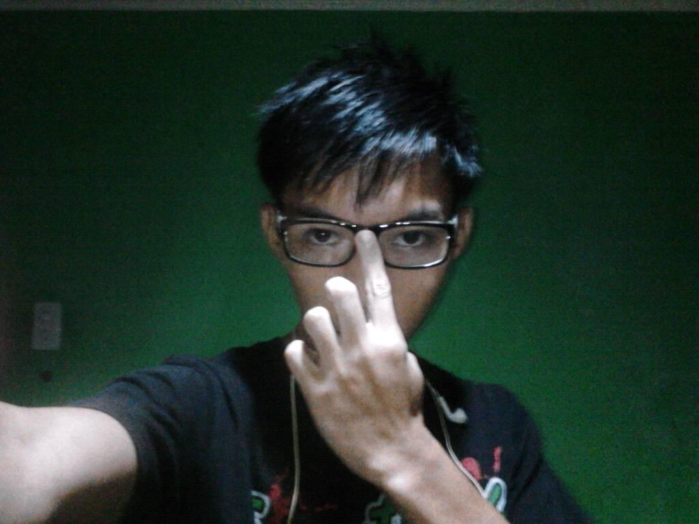
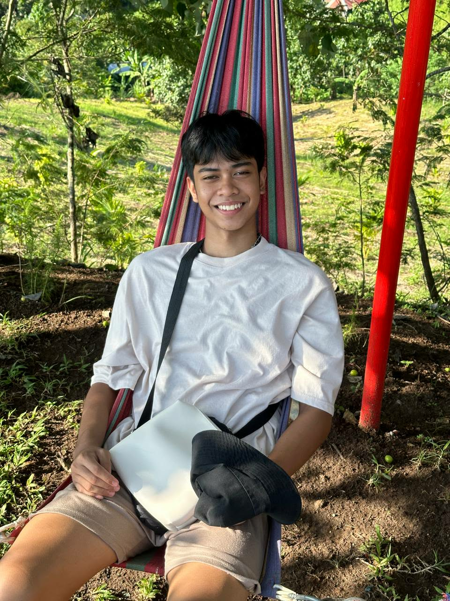

The Daily BCC is an article-based website dedicated to keeping you prepared and well-fed. We provide realtime weather insights alongside honest food reviews to help our community navigate their day with confidence and flavor.
To empower individuals with accurate weather information and authentic food discoveries, with a safer and more delicious lifestyle for everyone.
To become the leading digital hub where environmental awareness meets lifestyle exploration, connecting people to the world around them and the food and dishes.

Casano, Ralph Christian
Web Designer/Developer
Hecita, Jonald
Food Vlog Article Editor

Baldos, Paquito
Weather Updates/Tester
Thank you!